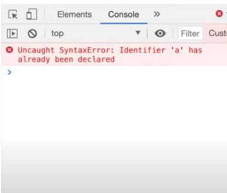

case 1- Understanding the scenario of Hoisting In javascript-The let and const are stored in Script scope and the Var is stored in Global scope.So we should compulsory declare let and const after intialising it.But for var if we declare before intialising it ,it shows a special placeholder called undefined .Case 1-When we console.log var before Intialising we Get undefined(memory is allocated but not intialised),and when we console.log let before intialising it we get error.When we console.log let after intialising we get appropriate result.

Case 2-let is more Strictor than var.If we redeclare let even afetr intialising it then it throws a syntax error in console stating let cannot be redeclared.Var can be redeclared.
Case 3-Const is more strictor than let .when we try to declare let a and when we intialise it later we get results in console.But when we declare a const and intialise it later we get a syntax error.

Case 4-When we try to redeclare const even after intialising it we get a Type Error.